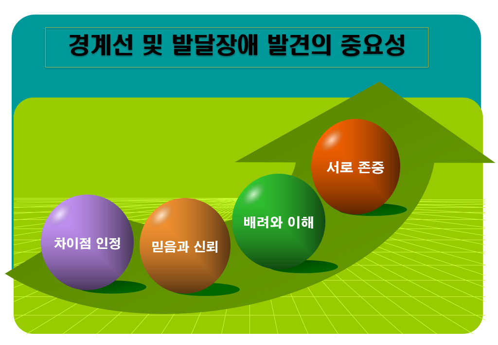

경계선 및 발달지연 학생의 조기 발견과 선별은 학습 및 사회적 발달에 있어 매우 중요한 역할을 한다. 경계선 지능을 가진 학생들은 평균 지능보다 낮지만 발달장애 기준에 해당하지 않아 일반 교육 환경에서 발견되지 못하는 경우가 많다. 발달지연은 주로 인지, 언어, 사회적, 신체적 발달의 지연을 의미하며, 이로 인해 학생들은 학교 생활에서 학습 성취도 및 또래 관계에서의 어려움을 겪게 된다.
경계선 지능과 발달지연은 아동 및 청소년의 학습과 발달에 있어 중요한 문제로, 적절한 개입과 지원이 요구된다. 경계선 지능은 평균 지능보다 낮지만 발달장애로 진단되지 않는 상태로, 학업과 일상생활에서 어려움을 경험할 수 있다. 반면 발달지연은 특정 발달 영역에서 또래보다 뒤처지는 상태로, 적절한 시기에 중재가 이루어지지 않으면 장기적인 학업 및 사회적 적응에 부정적인 영향을 미친다. 이 두 가지 상태는 아동의 전반적인 발달에 심각한 영향을 미칠 수 있으며, 학습 및 사회적 발달을 돕기 위한 체계적인 개입이 필요하다.

1. 경계선 지능의 정의 및 특성
경계선 지능의 정의는 IQ 70~85사이로, 발달장애로 진단되기에는 부족하지만, 학습 속도가 일반 학생에 비해 느리며 복잡한 문제 해결에 어려움을 겪는다. 이는 지능지수(IQ) 검사에서 기준치 아래의 점수를 받는 경우로 정의되며, 이들은 일상생활에서는 어느 정도 자립할 수 있지만, 학업에서는 어려움을 겪는 경우가 많다(박지훈, 2020). 경계선 지능을 가진 학생들은 학업에서 새로운 개념을 배우는 데 시간이 걸리고, 과제를 수행하는 능력이 제한적이다.
특히 복잡한 추론 능력과 문제 해결 능력이 부족하여, 추상적 사고나 논리적 문제 해결을 요구하는 상황에서 어려움을 경험할 가능성이 크다(이영민, 2022). 경계선 지능을 가진 학생들은 학습 속도가 일반 학생에 비해 느리며, 특히 언어 및 수리 능력에서 부족함을 보일 수 있다. 이로 인해 교실에서의 학습과 과제 수행에 있어 지속적인 어려움을 경험하며, 교사의 개별적 지도가 필요하다.
또한, 이러한 학생들은 또래와의 관계에서도 문제를 경험하는데, 이는 사회적 규칙을 이해하는 데 어려움을 겪기 때문이다. 사회적 상호작용에서의 부족한 능력은 친구들과의 갈등을 초래하거나, 대인관계에서의 소외를 경험하게 만들기도 한다.
2. 발달지연의 정의 및 특성
발달지연은 특정 영역에서 또래보다 현저히 뒤처지는 상태를 말하며, 이는 인지, 언어, 사회적, 신체적 발달에서 다양하게 나타날 수 있다. 발달지연은 유아기부터 그 징후가 관찰되며, 적절한 조기 개입이 이루어지지 않으면 아동의 학업 및 사회적 적응에 심각한 부정적 영향을 미칠 수 있다(정명훈, 2021).
발달지연의 원인은 유전적, 신경학적 요인뿐만 아니라 환경적 요인도 포함될 수 있으며, 이는 신체적 혹은 환경적 자극이 부족한 가정에서 자라는 아동에게서 자주 발생할 수 있다.
발달지연 아동은 학습 능력과 사회적 상호작용에서 어려움을 겪는다. 학습 속도는 또래에 비해 느리며, 특히 읽기, 쓰기, 수학과 같은 기초 학습에서 더 많은 시간이 요구된다. 이러한 아동은 언어 발달에서도 지연을 보이며, 이는 의사소통 능력의 제한으로 이어진다.
또한, 신체 발달에 있어서도 또래보다 뒤처질 수 있으며, 대근육 및 소근육 운동 능력에서 지연을 보일 수 있다(이하영, 2022). 이러한 발달지연은 결국 아동의 전반적인 학업 성취도에 부정적인 영향을 미치며, 사회적 고립을 경험하게 할 수 있다.
3. 경계선 지능 및 발달지연 학생의 주요 증상
경계선 지능 및 발달지연 학생의 주요 증상으로는 학습 속도 저하와 지속적인 학업 수행의 어려움이 있다. 이러한 학생들은 교실에서 새로운 개념을 배우는 데 시간이 오래 걸리며, 학습 내용을 이해하는 데 어려움을 겪는다. 이는 학업 성취도에 큰 영향을 미치며, 학습 동기를 저하시키기도 한다(김수진, 2021). 경계선 지능 및 발달지연 학생들은 학습 속도가 느리기 때문에 교사로부터 추가적인 학습 지원이 요구되며, 개별화된 학습 계획을 수립하는 것이 중요하다.
또한, 경계선 및 발달지연 학생들은 사회적 상호작용에서의 문제도 자주 경험한다. 이들은 또래 관계에서 어려움을 겪으며, 사회적 규칙을 이해하는 데 부족함을 보인다. 이로 인해 친구들과의 갈등이 발생할 수 있으며, 사회적 소외를 경험할 가능성이 크다. 사회적 상호작용에서의 문제는 이러한 학생들이 자존감에 부정적인 영향을 미치고, 학습 의욕에도 부정적인 영향을 미칠 수 있다(최유미, 2019).
경계선 및 발달지연 학생들은 정서적 좌절감, 낮은 자존감, 불안 및 우울과 같은 정서적 문제를 경험할 가능성이 크다. 이들은 학습에서의 실패와 또래 관계에서의 어려움을 자주 경험하기 때문에 정서적으로 불안정해질 수 있다. 이러한 정서적 문제는 학업과 사회적 상호작용에 부정적인 영향을 미치며, 학생들이 자발적으로 학습에 참여하는 것을 저해할 수 있다(박정아, 2021). 따라서, 이들에 대한 정서적 지원과 상담을 통해 학생들이 보다 안정적인 학습 환경에서 성장할 수 있도록 돕는 것이 중요하다.
4. 경계선 지능 및 발달지연에 대한 교육적 필요성
경계선 지능 및 발달지연 학생들을 적절히 지원하기 위해서는 조기 발견과 개입이 필수적이다. 조기 발견을 통해 학생들의 발달적 요구를 정확히 파악하고, 적절한 교육적 지원을 제공할 수 있다. 조기 개입이 이루어지지 않으면, 학습 및 사회적 상호작용에서 지속적인 실패를 경험하게 되어, 장기적인 발달 문제를 초래할 수 있다(이소영, 2020). 따라서, 교사와 부모, 상담사 간의 협력을 통해 학생의 발달 상태를 지속적으로 모니터링하고, 맞춤형 개입을 제공하는 것이이다.
경계선 지능 및 발달지연 학생들에게는 개별화된 교육 계획(IEP)이 필수적이다. 이들은 일반 학생들과 동일한 학습 목표를 설정하는 것이 비현실적일 수 있기 때문에, 학생의 발달 상태에 맞춘 맞춤형 학습 목표를 설정하고 단계적으로 실현할 수 있도록 지원해야 한다(김수진, 2021). 이러한 개별화된 교육 계획을 통해 학생들이 학습에서 성공 경험을 쌓을 수 있으며, 이는 학습 동기를 향상시키고 자존감을 높이는 데 기여한다.
또한, 경계선 및 발달지연 학생들에게 사회적 기술 훈련(SST)은 상호작용에서 어려움을 겪기 때문에, 대화 기술, 공감 능력, 문제 해결 능력을 강화하는 프로그램이 중요하다. 이를 통해 학생들은 또래와 원활한 상호작용을 할 수 있으며, 사회적 고립을 예방할 수 있다(김정우, 2020). 사회적 기술 훈련은 학생들이 자신감을 가지고 사회적 관계를 형성하는 데 도움을 주며, 장기적으로 사회적 적응 능력을 향상시킬 수 있다.
경계선 지능 및 발달지연 학생들에게는 정서적 지원도 필수적이다. 정서적으로 불안정한 상태에서는 학습과 사회적 상호작용에 어려움을 겪기 때문에, 심리 상담 및 정서적 지원 프로그램을 통해 학생들이 안정감을 찾을 수 있도록 해야 한다(박정아, 2021). 학생들은 정서적 안정을 되찾고, 학습에 보다 적극적으로 참여할 수 있게 된다. 또한, 정서적 지원을 통해 학생들의 자존감을 회복하고, 학업에서의 성취감을 높이는 것이 가능하다.
5. 경계선 지능 및 발달지연에 대한 사회적 지원 필요성
경계선 지능 및 발달지연 학생을 지원하기 위해서는 학교, 가정, 지역사회가 협력하여 일관된 지원 체계를 구축하는 것이 필수적이다. 학교에서는 학생들의 발달 상태를 지속적으로 모니터링하고, 맞춤형 교육 계획을 수립해야 한다. 교사와 상담사는 학생의 발달 상태를 평가하고, 이에 맞는 개입 프로그램을 제공함으로써 학생의 학업 성취도와 사회적 적응 능력을 향상시킬 수 있다(김정우, 2020).
가정에서는 부모가 자녀의 발달 상태를 이해하고, 정서적 지지와 교육적 지원을 제공해야 한다. 부모와 학교 간의 긴밀한 협력을 통해 학생에게 일관된 교육 환경을 제공하는 것이 중요하다(이소영, 2020). 또한, 지역사회 내 발달센터와 상담센터와 같은 자원을 활용하여 학생이 필요한 지원을 받을 수 있도록 도와야 한다. 지역사회와의 협력은 학생에게 추가적인 전문적 지원을 제공하는 데 중요한 역할을 하며, 학생의 전인적 발달을 도모할 수 있다(정명훈, 2021).
김수진(2021). 사회적 기술 훈련이 발달지연 청소년의 대인관계 형성에 미치는 영향. 아동심리학회지.
김정우(2020). 발달지연의 원인과 조기 개입의 중요성. 아동발달 연구.
박지훈 (2020). 경계선 지능 청소년의 학업 성취도 향상을 위한 교육적 접근. 특수교육연구.
윤경미(2019). 학교 환경에서의 발달지연 학생 지원 방안. 교육과 심리.
이소영(2020). 가정 환경이 발달지연 아동의 발달에 미치는 영향. 부모교육연구.
이영민(2022). 경계선 지능 학생의 학습 및 생활적응을 위한 지원 방안. 특수아동연구.
박정아(2021). 경계선 지능 및 발달지연 청소년에 대한 조기 개입 전략. 심리상담학회지.
이하영(2022). 경계선 지능 아동의 정서적 상태와 자존감 향상 프로그램 연구. 상담심리학회지.
정명훈(2021). 지역사회 자원 연계와 발달지연 아동의 발달 지원 방안. 특수교육연구.
2024.09.22 - [특수장애] - 장애 유아를 위한 특수교육 과정의 필요성-자립심, 잠재력 발휘
장애 유아를 위한 특수교육 과정의 필요성-자립심, 잠재력 발휘
장애 유아를 위한 특수교육 과정의 필요성 장애 유아를 위한 교육과정의 필요성은 장애 유아가 일반적인 교육과정에서 배제되지 않고, 그들의 고유한 발달 요구를 충족시키기 위한 맞춤형 교
think-sis.co.kr
2023.10.27 - [특수장애] - 개별화교육의 정의 - 학습환경의 다양성 지원
개별화교육의 정의 - 학습환경의 다양성 지원
특수교육에서 개별화 교육은 다양한 학습 능력과 요구에 부응하기 위해 개별 학생을 중심으로 한 맞춤형 교육 접근 방식을 의미한다. 이러한 접근은 일반 교육 환경에서 학습하는 학생들과는
think-sis.co.kr